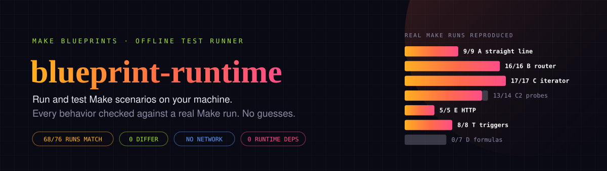
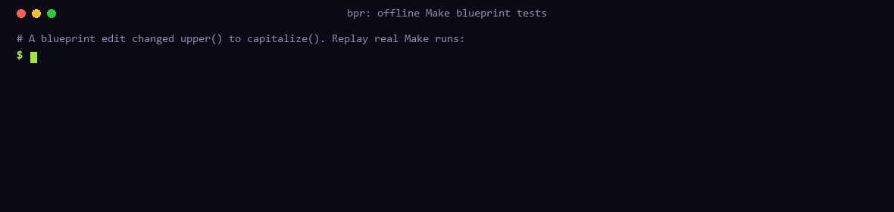

Test Make.com scenarios offline, before you deploy
blueprint-runtime (bpr) is an open source test runner for Make.com (formerly Integromat) scenario blueprints. It replays real Make runs on your machine or in CI and points at the first value that changed. No Make account, no credits, no network.
The problem
You build a scenario in Make and it works. Then someone edits a mapping, and the only way to know what broke is to run it again in Make, with real data and real credits. bpr runs the exported blueprint locally instead. It compares every module's input and output bundles, every filter decision and the webhook response with what Make actually produced:
$ bpr test examples/broken-mapping
FAIL A-002-plain module 2 input bundle 1 at /value: Make had "ADA LOVELACE", the local run "Ada Lovelace"Someone changed upper(1.name) to capitalize(1.name). The test caught it at module 2.
Measured against real Make
71 of 79 runs recorded in a real Make account are reproduced exactly, and 0 differ. The other 8 use behavior that was never observed, so bpr refuses them and names the reason instead of guessing. Every supported behavior has a recording in the corpus.

What you can do with it
- Regression-test Make scenarios in CI. Run
bpr testin GitHub Actions on every change to an exported blueprint. - Snapshot-test a scenario.
bpr runsaves everything a scenario produces; any later edit that changes an output fails the test. - Validate a blueprint before import.
bpr inspectcatches duplicate keys, broken routes and references to modules that have not run yet. - Test HTTP and app modules without calling them. They run from fixtures you write, and a missing fixture fails closed.
Quick start
npm install -g blueprint-runtime
bpr inspect your-scenario.blueprint.json # can it run offline?Or without installing: npx blueprint-runtime inspect your-scenario.blueprint.json. To replay the 79 recorded Make runs and the examples, clone the repository:
git clone https://github.com/intikhab49/blueprint-runtime
cd blueprint-runtime
npm ci
npm run build && npm link
bpr test corpus/reference --allow-unsupported # replay all 79 recorded Make runs
bpr test examples/broken-mapping # a broken mapping, caughtRequires Node 24 or newer. MIT licensed, zero runtime dependencies. On npm.
FAQ
How do I test a Make.com scenario without running it in Make?
Export the blueprint (scenario menu → Export blueprint), save a sample input, and run bpr run blueprint.json --input input.json > expected.json. A test case pointing at that snapshot fails as soon as an edit changes any module's output.
Does it work with Integromat blueprints?
Yes. Integromat is Make's former name and the format is the same. Wrapped exports and Make API responses are unwrapped automatically.
Does it call Make, Google Sheets, OpenAI or any other API?
No. Nothing goes over the network, and no Make account or API token is needed.
What does [] mean in a mapping like {{1.choices[].message.content}}?
It reads the first element only. That was recorded in real Make runs. Use map() to read every element.
What doesn't it support yet?
It covers a narrow slice of Make, and most public blueprints still use something outside it. The most common gaps are error-handler routes, json:ParseJSON and util:SetVariables. bpr inspect tells you up front whether your blueprint can run offline.
Is it an official Make tool?
No. It is an independent open source project.